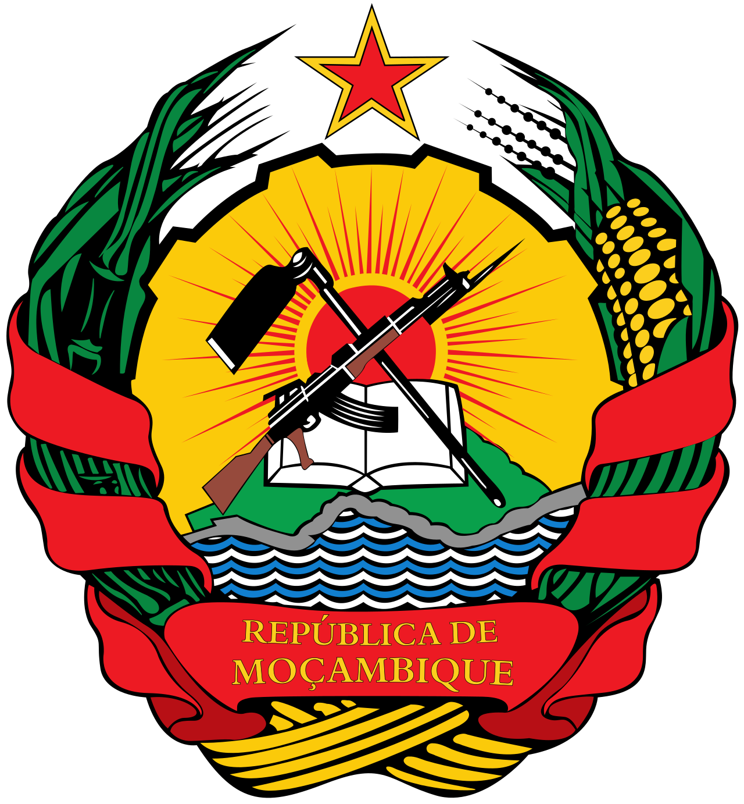
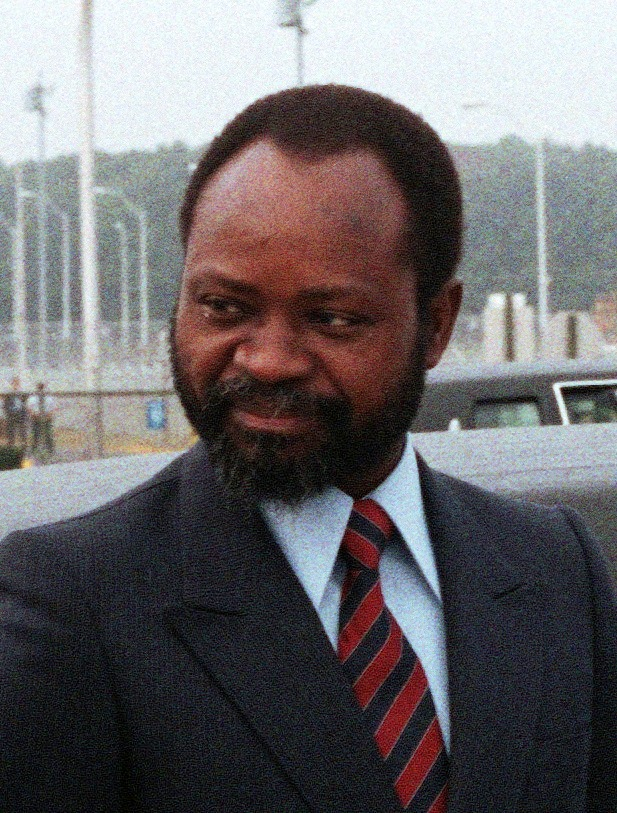
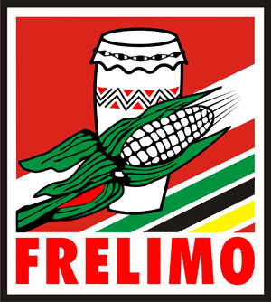
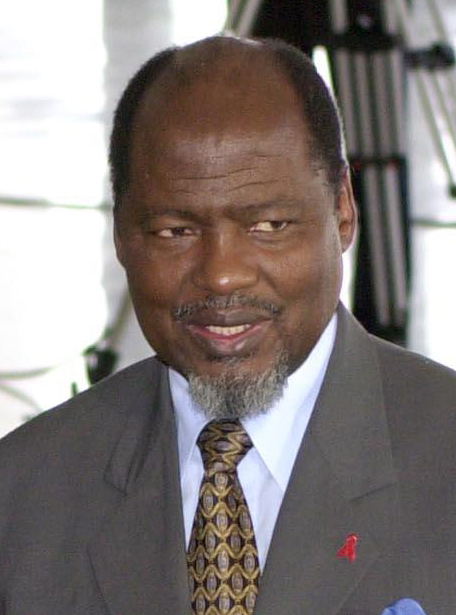
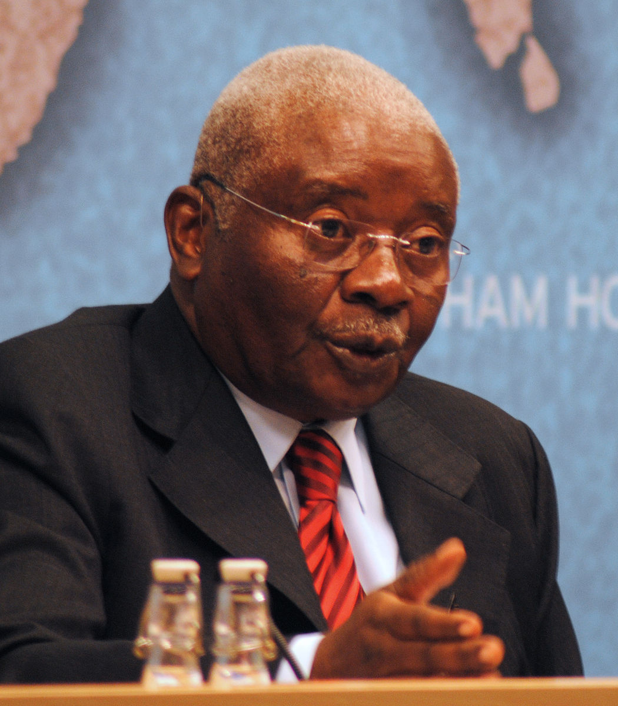
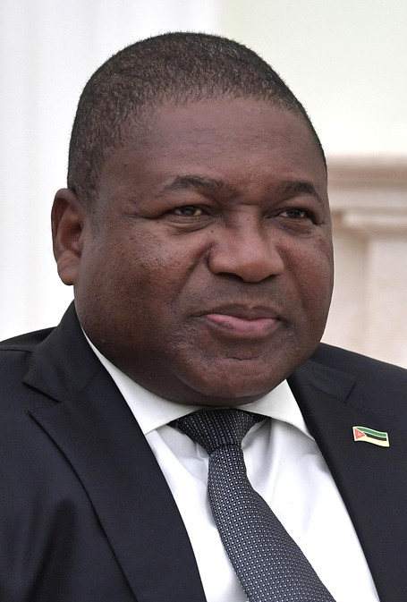

REPUBLIC OF MOZAMBIQUE


"Beloved Homeland"
FIRST PRESIDENT


- Samora Moisés Machel
- Political Party: FRELIMO
- In Office From: 25 June 1975.
- In Office until: 19 October 1986.
- Born: 29 September 1934.
- Died: 19 October 1986 [Plane Accident].
- Aged: 53 Years Old.
SECOND PRESIDENT

- Joaquim Alberto Chissano
- Political Party: FRELIMO
- In Office From: 6 November 1986.
- In Office Until: 2 February 2005.
- Born: 22 October 1939.
- Aged: 83 Years Old.
THIRD PRESIDENT

- Armando Emilio Guebuza.
- Political Party: FRELIMO
- In Office From: 5 February 2005.
- In Office Until: 15 January 2015.
- Born: 20 January 1943.
- Aged:80 Years Old.
FOURTH PRESIDENT

Incumbent President
- Filipe Jacinto Nyusi.
- Political Party: FRELIMO
- In Office From: 15 January 2015.
- Born: 9 February 1959.
- Aged: 64 Years Old.